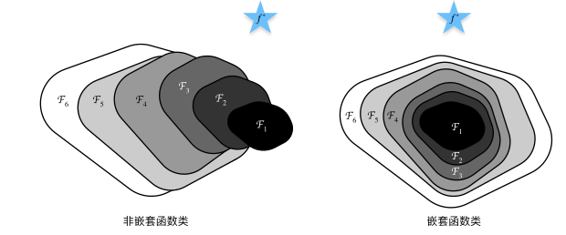
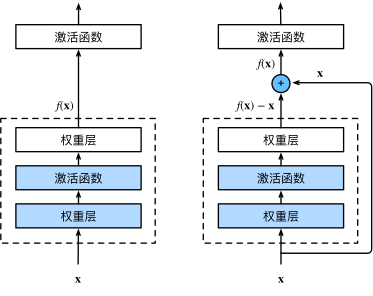
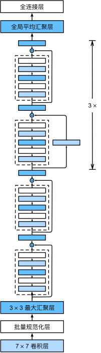

残差网络（ResNet）#
随着我们设计越来越深的网络，深刻理解“新添加的层如何提升神经网络的性能”变得至关重要。更重要的是设计网络的能力，在这种网络中，添加层会使网络更具表现力， 为了取得质的突破，我们需要一些数学基础知识。
函数类#
首先，假设有一类特定的神经网络架构\(\mathcal{F}\)，它包括学习速率和其他超参数设置。 对于所有\(f \in \mathcal{F}\)，存在一些参数集（例如权重和偏置），这些参数可以通过在合适的数据集上进行训练而获得。 现在假设\(f^*\)是我们真正想要找到的函数，如果是\(f^* \in \mathcal{F}\)，那我们可以轻而易举的训练得到它，但通常我们不会那么幸运。 相反，我们将尝试找到一个函数\(f^*_\mathcal{F}\)，这是我们在\(\mathcal{F}\)中的最佳选择。 例如，给定一个具有\(\mathbf{X}\)特性和\(\mathbf{y}\)标签的数据集，我们可以尝试通过解决以下优化问题来找到它：
那么，怎样得到更近似真正\(f^*\)的函数呢？ 唯一合理的可能性是，我们需要设计一个更强大的架构\(\mathcal{F}'\)。 换句话说，我们预计\(f^*_{\mathcal{F}'}\)比\(f^*_{\mathcal{F}}\)“更近似”。 然而，如果\(\mathcal{F} \not\subseteq \mathcal{F}'\)，则无法保证新的体系“更近似”。 事实上，\(f^*_{\mathcal{F}'}\)可能更糟： 如下图所示，对于非嵌套函数（non-nested function）类，较复杂的函数类并不总是向“真”函数\(f^*\)靠拢（复杂度由\(\mathcal{F}_1\)向\(\mathcal{F}_6\)递增）。 在下图的左边，虽然\(\mathcal{F}_3\)比\(\mathcal{F}_1\)更接近\(f^*\)，但\(\mathcal{F}_6\)却离的更远了。 相反对于下图右侧的嵌套函数（nested function）类\(\mathcal{F}_1 \subseteq \ldots \subseteq \mathcal{F}_6\)，我们可以避免上述问题。
因此，只有当较复杂的函数类包含较小的函数类时，我们才能确保提高它们的性能。 对于深度神经网络，如果我们能将新添加的层训练成恒等映射（identity function）\(f(\mathbf{x}) = \mathbf{x}\)，新模型和原模型将同样有效。 同时，由于新模型可能得出更优的解来拟合训练数据集，因此添加层似乎更容易降低训练误差。
针对这一问题，何恺明等人提出了残差网络（ResNet）。 它在2015年的ImageNet图像识别挑战赛夺魁，并深刻影响了后来的深度神经网络的设计。 残差网络的核心思想是：每个附加层都应该更容易地包含原始函数作为其元素之一。 于是，残差块（residual blocks）便诞生了，这个设计对如何建立深层神经网络产生了深远的影响。 凭借它，ResNet赢得了2015年ImageNet大规模视觉识别挑战赛。
残差块#
让我们聚焦于神经网络局部：如图下图所示，假设我们的原始输入为\(x\)，而希望学出的理想映射为\(f(\mathbf{x})\)（作为下图上方激活函数的输入）。 下图左图虚线框中的部分需要直接拟合出该映射\(f(\mathbf{x})\)，而右图虚线框中的部分则需要拟合出残差映射\(f(\mathbf{x}) - \mathbf{x}\)。 残差映射在现实中往往更容易优化。 以本节开头提到的恒等映射作为我们希望学出的理想映射\(f(\mathbf{x})\)，我们只需将下图中右图虚线框内上方的加权运算（如仿射）的权重和偏置参数设成0，那么\(f(\mathbf{x})\)即为恒等映射。 实际中，当理想映射\(f(\mathbf{x})\)极接近于恒等映射时，残差映射也易于捕捉恒等映射的细微波动。 下图右边是ResNet的基础架构–残差块（residual block）。 在残差块中，输入可通过跨层数据线路更快地向前传播。
ResNet沿用了VGG完整的\(3\times 3\)卷积层设计。 残差块里首先有2个有相同输出通道数的\(3\times 3\)卷积层。 每个卷积层后接一个批量规范化层和ReLU激活函数。 然后我们通过跨层数据通路，跳过这2个卷积运算，将输入直接加在最后的ReLU激活函数前。 这样的设计要求2个卷积层的输出与输入形状一样，从而使它们可以相加。 如果想改变通道数，就需要引入一个额外的\(1\times 1\)卷积层来将输入变换成需要的形状后再做相加运算。 残差块的实现如下：
import torch
from torch import nn
from torch.nn import functional as F
from d2l import torch as d2l
class Residual(nn.Module): #@save
def __init__(self, input_channels, num_channels,
use_1x1conv=False, strides=1):
super().__init__()
self.conv1 = nn.Conv2d(input_channels, num_channels,
kernel_size=3, padding=1, stride=strides)
self.conv2 = nn.Conv2d(num_channels, num_channels,
kernel_size=3, padding=1)
if use_1x1conv:
self.conv3 = nn.Conv2d(input_channels, num_channels,
kernel_size=1, stride=strides)
else:
self.conv3 = None
self.bn1 = nn.BatchNorm2d(num_channels)
self.bn2 = nn.BatchNorm2d(num_channels)
def forward(self, X):
Y = F.relu(self.bn1(self.conv1(X)))
Y = self.bn2(self.conv2(Y))
if self.conv3:
X = self.conv3(X)
Y += X
return F.relu(Y)
如下图所示，此代码生成两种类型的网络：
一种是当use_1x1conv=False时，应用ReLU非线性函数之前，将输入添加到输出。
另一种是当use_1x1conv=True时，添加通过\(1 \times 1\)卷积调整通道和分辨率。
下面我们来查看输入和输出形状一致的情况。
blk = Residual(3,3)
X = torch.rand(4, 3, 6, 6)
Y = blk(X)
Y.shape
torch.Size([4, 3, 6, 6])
我们也可以在增加输出通道数的同时，减半输出的高和宽。
blk = Residual(3,6, use_1x1conv=True, strides=2)
blk(X).shape
torch.Size([4, 6, 3, 3])
ResNet模型#
ResNet的前两层跟之前介绍的GoogLeNet中的一样： 在输出通道数为64、步幅为2的\(7 \times 7\)卷积层后，接步幅为2的\(3 \times 3\)的最大汇聚层。 不同之处在于ResNet每个卷积层后增加了批量规范化层。
b1 = nn.Sequential(nn.Conv2d(1, 64, kernel_size=7, stride=2, padding=3),
nn.BatchNorm2d(64), nn.ReLU(),
nn.MaxPool2d(kernel_size=3, stride=2, padding=1))
GoogLeNet在后面接了4个由Inception块组成的模块。 ResNet则使用4个由残差块组成的模块，每个模块使用若干个同样输出通道数的残差块。 第一个模块的通道数同输入通道数一致。 由于之前已经使用了步幅为2的最大汇聚层，所以无须减小高和宽。 之后的每个模块在第一个残差块里将上一个模块的通道数翻倍，并将高和宽减半。
下面我们来实现这个模块。注意，我们对第一个模块做了特别处理。
def resnet_block(input_channels, num_channels, num_residuals,
first_block=False):
blk = []
for i in range(num_residuals):
if i == 0 and not first_block:
blk.append(Residual(input_channels, num_channels,
use_1x1conv=True, strides=2))
else:
blk.append(Residual(num_channels, num_channels))
return blk
接着在ResNet加入所有残差块，这里每个模块使用2个残差块。
b2 = nn.Sequential(*resnet_block(64, 64, 2, first_block=True))
b3 = nn.Sequential(*resnet_block(64, 128, 2))
b4 = nn.Sequential(*resnet_block(128, 256, 2))
b5 = nn.Sequential(*resnet_block(256, 512, 2))
最后，与GoogLeNet一样，在ResNet中加入全局平均汇聚层，以及全连接层输出。
net = nn.Sequential(b1, b2, b3, b4, b5,
nn.AdaptiveAvgPool2d((1,1)),
nn.Flatten(), nn.Linear(512, 10))
每个模块有4个卷积层（不包括恒等映射的\(1\times 1\)卷积层）。 加上第一个\(7\times 7\)卷积层和最后一个全连接层，共有18层。 因此，这种模型通常被称为ResNet-18。 通过配置不同的通道数和模块里的残差块数可以得到不同的ResNet模型，例如更深的含152层的ResNet-152。 虽然ResNet的主体架构跟GoogLeNet类似，但ResNet架构更简单，修改也更方便。这些因素都导致了ResNet迅速被广泛使用。 下图描述了完整的ResNet-18。
在训练ResNet之前，让我们观察一下ResNet中不同模块的输入形状是如何变化的。 在之前所有架构中，分辨率降低，通道数量增加，直到全局平均汇聚层聚集所有特征。
X = torch.rand(size=(1, 1, 224, 224))
for layer in net:
X = layer(X)
print(layer.__class__.__name__,'output shape:\t', X.shape)
Sequential output shape: torch.Size([1, 64, 56, 56])
Sequential output shape: torch.Size([1, 64, 56, 56])
Sequential output shape: torch.Size([1, 128, 28, 28])
Sequential output shape: torch.Size([1, 256, 14, 14])
Sequential output shape: torch.Size([1, 512, 7, 7])
AdaptiveAvgPool2d output shape: torch.Size([1, 512, 1, 1])
Flatten output shape: torch.Size([1, 512])
Linear output shape: torch.Size([1, 10])
训练模型#
同之前一样，我们在Fashion-MNIST数据集上训练ResNet。
#train_iter, test_iter = d2l.load_data_fashion_mnist(batch_size=256, resize=96)
#下载模型使用
import os
from torch.utils.data import Dataset, DataLoader
from torchvision import transforms,datasets
import matplotlib.pyplot as plt
image_size = 96
data_transform = transforms.Compose([
#transforms.ToPILImage(), # 将torch.Tensor或numpy.ndarray类型图像转为PIL.Image类型图像。这段里面可以移除transforms.ToPILImage()，因为 FashionMNIST 数据集已经是 PIL.Image 类型
transforms.Resize(image_size),#按给定尺寸对图像进行缩放
transforms.ToTensor() #将PIL.Image或numpy.ndarray类型图像转为torch.Tensor类型图像
])
# train表示是否是训练集，download表示是否需要下载，transform表示是否需要进行数据变换
train_data = datasets.FashionMNIST(root='../raw/data/', train=True, download=True, transform=data_transform)
test_data = datasets.FashionMNIST(root='../raw/data/', train=False, download=True, transform=data_transform)
batch_size = 256
num_workers = 0 #mac 不知道为什么变为4也报错 # 对于Windows用户，这里应设置为0，否则会出现多线程错误
# DataLoader是一个用于生成batch数据的迭代器，可以设置batch_size、shuffle、num_workers等参数
#batch_size是指每个批次中包含的样本数量。shuffle=True表示在每个epoch开始时，将训练数据集打乱顺序，以增加模型的泛化能力。num_workers是指用于数据加载的线程数量，可以加快数据加载的速度。drop_last=True表示如果训练数据集的样本数量不能被batch_size整除，最后一个不完整的批次将被丢弃。
train_iter = DataLoader(train_data, batch_size=batch_size, shuffle=True, num_workers=num_workers, drop_last=True)
test_iter = DataLoader(test_data, batch_size=batch_size, shuffle=False, num_workers=num_workers)
lr, num_epochs = 0.05, 10
d2l.train_ch6(net, train_iter, test_iter, num_epochs, lr, d2l.try_gpu())
loss 0.014, train acc 0.996, test acc 0.915
2899.0 examples/sec on cuda:0